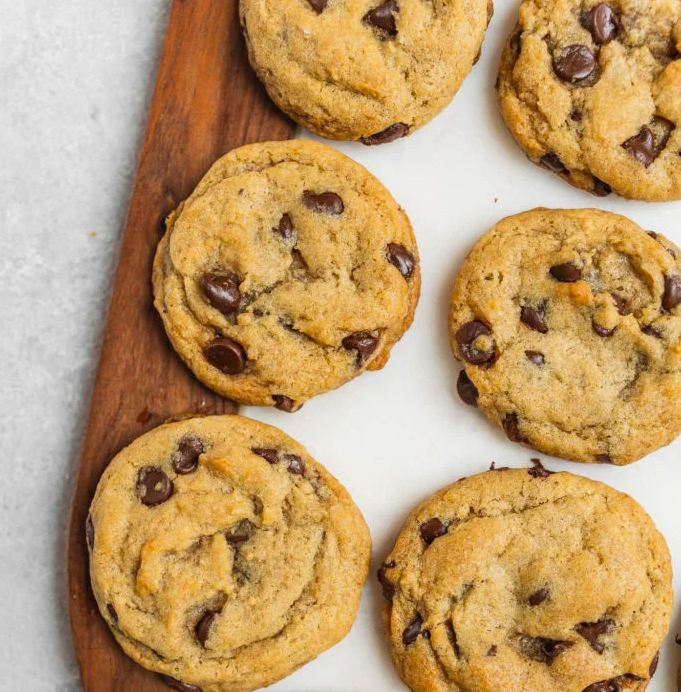

Classic Vegan Chocolate Chip Cookies
by Sweet Simple Vegan

Ingredients
- 3/4 cup refined coconut oil
- 3/4 cup organic granulated sugar
3/4 cup packed organic brown sugar
- 1/2 cup unsweetened applesauce
- 2 teaspoons vanilla
- 2 1/2 cups all-purpose flour
- 1 teaspoon baking soda
- 1 teaspoon salt
1/2 teaspoon baking powder
- 1 1/4 cups vegan chocolate chips
Instructions
- In a large bowl, add the coconut oil, granulated sugar, and brown sugar. Using a hand mixer (or a whisk) cream the oil and sugars together until fluffy.
- Add in the applesauce and vanilla, and mix well.
- Stir in the all-purpose flour, baking soda, baking powder, and salt until a dough forms. Lastly, fold in chocolate chips until well incorporated.
- Preheat oven to 350°F and line a baking sheet with parchment paper or a silicone mat. Keep in mind that this recipe makes 3 dozen so you will need to bake multiple batches.
- Using a 1 tablespoon-sized scooper, drop mounds of dough onto the baking sheet 2 inches apart (we fit 12 on each sheet and baked these in 3 batches). No need to press them down.
- Place into the oven and bake for 13-14 minutes, or until the edges brown. The cookies will seem soft but don’t worry, they will firm up while they cool. Allow the cookies to rest on the baking sheet for 1 minute after removing them from the oven and then carefully transfer them onto a cooling rack using a spatula.
- Cool and set and then dig in!